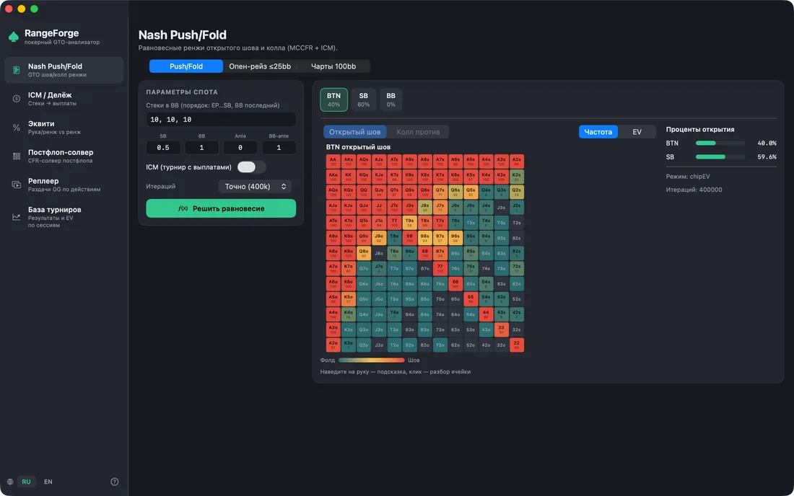
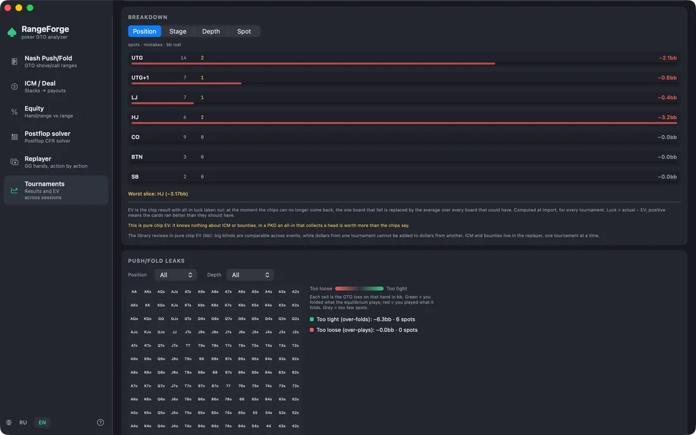
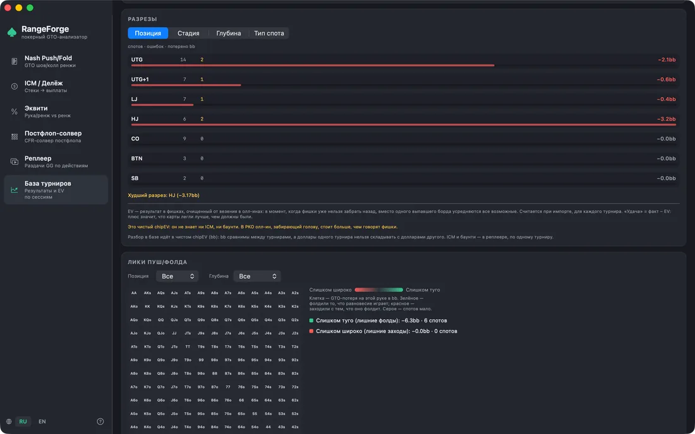
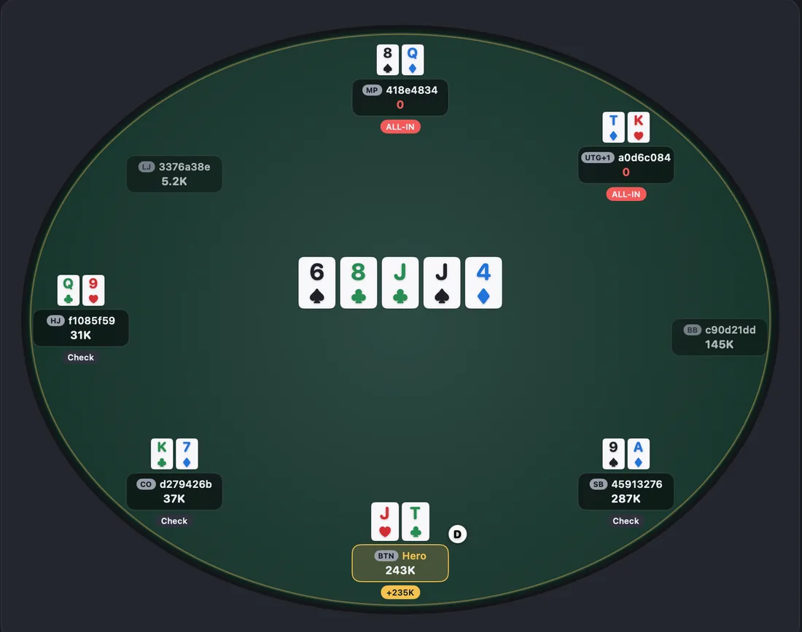
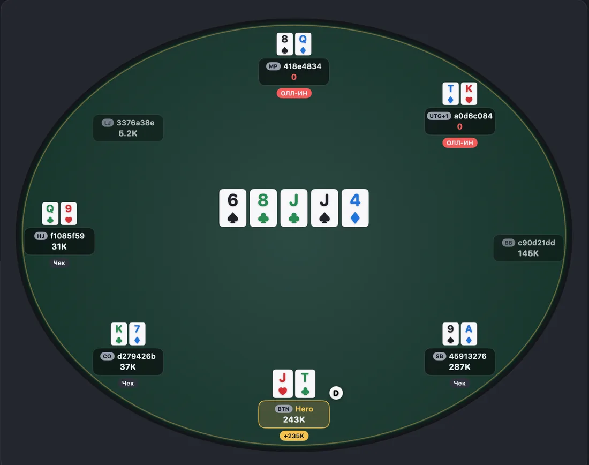

RangeForge
Poker GTO, ranges & ICM — a study tool for macOS.
Покерное GTO, ренжи и ICM — инструмент для изучения теории на macOS.
RangeForge is a fast, native workbench for studying poker theory. It brings equilibrium ranges, ICM, equity and a postflop solver into one clean macOS app. Everything is computed on your Mac — there are no accounts, no internet connection and no data collection.
RangeForge — быстрый нативный инструмент для изучения теории покера. Равновесные ренжи, ICM, эквити и постфлоп-солвер собраны в одном приложении для macOS. Все расчёты идут на вашем Mac: без аккаунтов, без интернета и без сбора данных.
Screenshots
Скриншоты











What it does
Что умеет
Nash push/fold
Unexploitable shove and calling ranges for tournament spots with 2–10 players. Stacks, blinds, antes and payouts; chip-EV or ICM; solved with Monte-Carlo CFR.
Невыгодные для эксплуатации ренжи шова и колла для турнирных спотов на 2–10 игроков. Стеки, блайнды, анте и выплаты; chip-EV или ICM; решается методом Monte-Carlo CFR.
ICM & deals
ICM и делёж
Turn chip stacks into prize-pool equity with the Malmuth–Harville model, and read the fair chip-chop numbers straight off it.
Перевод стеков в долю призового фонда по модели Malmuth–Harville и честные суммы для чип-чоп дележа.
Equity
Эквити
Win/tie equity for up to six players on any board — exact enumeration for fixed hands, fast Monte-Carlo for ranges.
Шансы на победу для шести игроков на любой доске — точный перебор для конкретных рук, быстрое Монте-Карло для ренжей.
Postflop solver
Постфлоп-солвер
A heads-up solver on Discounted CFR+ with exact, blocker-aware showdowns. Read the strategy as an action-frequency heat map.
Хедз-ап солвер на Discounted CFR+ с точным шоудауном и учётом блокеров. Стратегия читается как тепловая карта частот действий.
Visual range builder
Визуальный ренж-билдер
Paint ranges across the 13×13 grid with weight brushes for mixed strategies, a Top-N% selector, presets and two-way sync with standard notation.
Рисование ренжей по матрице 13×13, кисти весов для смешанных стратегий, выбор «Топ N%», пресеты и двусторонняя синхронизация со стандартной нотацией.
Replayer & session review
Реплеер и разбор сессии
Import a hand-history file exported by your poker client, step through hands on a felt table, and have push/fold decisions reviewed automatically against the solver.
Импорт файла с историей рук, выгруженного вашим покерным клиентом, пошаговый просмотр раздач за столом и автоматический разбор push/fold решений против солвера.
Privacy
Приватность
RangeForge has no network access at all. It is sandboxed without the network entitlement, so macOS itself prevents it from connecting anywhere. It contains no analytics, no accounts and no tracking of any kind. Hand-history files you import are read on your Mac and never leave it.
У RangeForge вообще нет доступа к сети. Приложение работает в песочнице без сетевого разрешения — macOS сама не даст ему никуда подключиться. В нём нет аналитики, аккаунтов и никакого отслеживания. Файлы с историей рук читаются на вашем Mac и никуда не отправляются.
Read the full privacy policy → Полная политика конфиденциальности →
FAQ
Частые вопросы
Which poker sites does it read?
GGPoker and Pokerok: hand histories exported from PokerCraft (.txt files) and the “Tournament #…” result files. RangeForge does not read exports from other sites.
Can I use RangeForge while I play?
No, by design. RangeForge reviews hands you have already played: it never connects to a poker client, gives no advice at the table and reads only the files you open yourself.
Do my hands get sent anywhere?
No. The app has no permission to reach the network — macOS itself won't let it connect anywhere. There are no accounts, no analytics and no tracking: everything is computed on your Mac, with no internet needed.
Where is the tournament library kept?
On your Mac, in the app's folder ~/Library/Containers/com.RangeForge.app. The
hands are stored verbatim, as exported, and Time Machine backs them up with everything else.
Keep the original PokerCraft exports too: the library can be rebuilt from them.
Why didn't the GTO review score every hand?
The review checks push/fold spots only — all-in-or-fold decisions on a short stack. That is usually a small share of the hands; every other decision is left unscored. A hand with a flop can be opened in the Replayer and sent to the postflop solver.
How do I review a tournament under ICM rather than in chips?
ICM needs the payout ladder. In the Replayer, set the payout ladder before Review session. With no ladder the review runs in chip EV.
Why is the GTO review so slow?
Every push/fold spot is solved from scratch, right on your Mac — hours on a large library. Start with one tournament: the Review button on its card.
Why doesn't luck match Hold'em Manager?
In RangeForge, luck = actual − EV: positive means the cards ran better than they should have. Hold'em Manager's EV Diff column is the other way round, so the signs are opposite.
Какие румы поддерживаются?
GGPoker и Pokerok: история рук, выгруженная из PokerCraft (файлы .txt), и файлы результатов турниров «Tournament #…». Выгрузки других румов RangeForge не читает.
Можно ли пользоваться RangeForge во время игры?
Нет, и так задумано. RangeForge разбирает уже сыгранные раздачи: он не подключается к покерному клиенту, ничего не подсказывает за столом и читает только те файлы, которые вы открыли сами.
Мои раздачи куда-нибудь отправляются?
Нет. У приложения нет разрешения на выход в сеть — macOS сама не даст ему никуда подключиться. Нет аккаунтов, аналитики и отслеживания: всё считается на вашем Mac, интернет не нужен.
Где хранится база турниров?
На вашем Mac, в папке приложения ~/Library/Containers/com.RangeForge.app.
Руки лежат дословно, как в выгрузке, и Time Machine копирует их вместе с остальными файлами.
Исходные выгрузки PokerCraft тоже лучше сохранить: из них базу можно собрать заново.
Почему GTO-разбор оценил не все раздачи?
Разбор проверяет только пуш/фолд-споты — решения «олл-ин или фолд» на коротком стеке. Обычно это небольшая часть рук, остальные решения остаются без оценки. Раздачу с флопом можно открыть в реплеере и отправить в постфлоп-солвер.
Как разобрать турнир по ICM, а не в фишках?
Для ICM нужна сетка выплат. В реплеере задайте сетку выплат перед «Разобрать сессию». Без сетки разбор идёт в чипEV.
Почему GTO-разбор идёт так долго?
Каждый пуш/фолд-спот решается солвером заново, прямо на вашем Mac, — на большой базе это часы. Начните с одного турнира: кнопка «Разобрать» в его карточке.
Почему «удача» не совпадает с Hold'em Manager?
В RangeForge «удача» = факт − EV: плюс значит, что карты легли лучше, чем должны были. В Hold'em Manager колонка EV Diff считается наоборот, поэтому знаки противоположны.
Support
Поддержка
Questions, bug reports and feature requests go to the RangeForge channel on Telegram:
Вопросы, сообщения об ошибках и пожелания — в канал RangeForge в Telegram:
Replies usually arrive within a few days. To get a useful answer on the first exchange, please include:
Обычно отвечаю в течение нескольких дней. Чтобы разобраться с первого раза, приложите:
- your macOS version and Mac model (Apple menu → About This Mac);
- the RangeForge version (RangeForge menu → About RangeForge);
- which module you were in and what you expected to happen instead;
- a screenshot, if anything looked wrong on screen.
- версию macOS и модель Mac (меню Apple → «Об этом Mac»);
- версию RangeForge (меню RangeForge → «О программе»);
- в каком модуле это случилось и какого поведения вы ожидали;
- скриншот, если на экране что-то выглядело не так.
Please do not attach hand-history files unless I ask for one. They contain your play and other players' screen names, and support does not need them to reproduce most problems.
Не прикладывайте файлы с историей рук, пока я их не попрошу. В них ваша игра и ники других игроков, а для воспроизведения большинства проблем они не нужны.
Requirements
Требования
macOS 14 (Sonoma) or later, on Apple silicon or Intel. RangeForge works fully offline — no internet connection is needed at any point, including first launch.
macOS 14 (Sonoma) или новее, Apple silicon или Intel. RangeForge полностью работает офлайн — интернет не нужен ни на одном этапе, включая первый запуск.